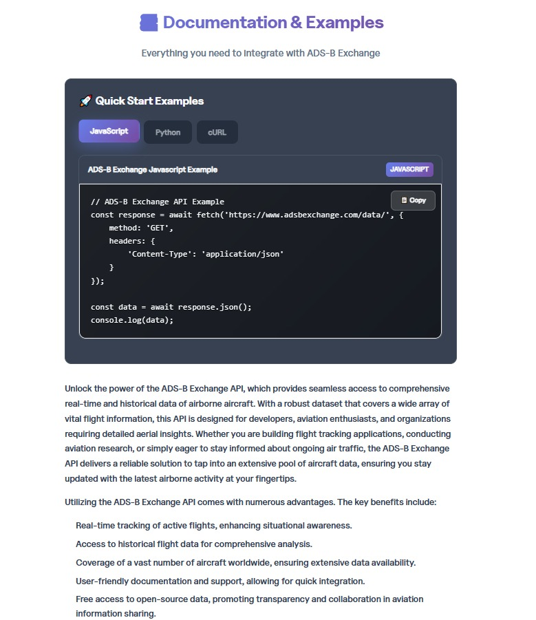
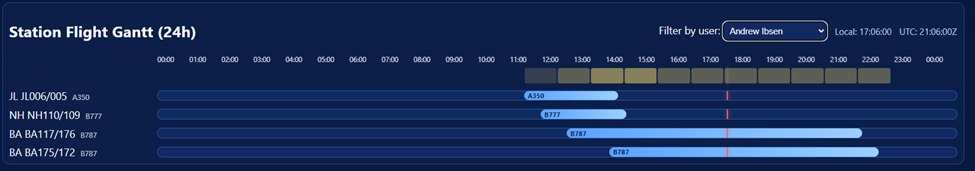
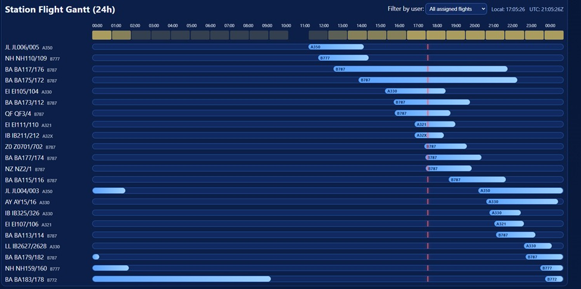

Line Maintenance Operational Dashboard
Live app: https://jfk-ops-live-dashboard-vercel-mirro.vercel.app/
A low-code, station-tailorable operations platform designed to improve day-of-ops visibility, precision resource management,
and tactical execution quality in line maintenance environments.
Primary objective: reduce planning friction and make real-time staffing/ops decisions faster.
Delivery model: low-code web app, easy to tailor, near-zero software cost to operate.
1) Executive Context
Line maintenance teams operate in high-tempo windows where schedule changes, gate/turn pressures, and variable staffing create coordination risk.
The dashboard consolidates planning and live context into one operational surface so engineers and managers can execute with less friction.
2) Core Capabilities
| Capability | What it does | Operational value |
|---|
| Daily Roster CSV Upload | Ingests daily station activity into a ready-to-use board. | Fast startup; no manual rebuild of the shift board. |
| Interpretative parsing logic | Transposes roster inputs into structured flight/assignment records. | Works with variable roster formats across stations. |
| Assignment layer | Editable certifier/mechanic fields + manual temporary staff support. | Rapid rebalance when shift reality changes. |
| Gantt + Heat-map | 24h timeline with overlap/peak intensity visibility. | Clear staffing insight for managers during peaks. |
| Weather tile | Now + AM/PM/EVE weather context with precipitation. | Improves tactical planning and risk anticipation. |
| Enrichment layers | Flight/reg/type/status enrichment with caching and fallback behavior. | Better completeness and continuity during feed issues. |
3) Architecture (practical, resilient)
Input
Daily Roster CSV
Interpretation
Roster parsing + assignment mapping
Board Engine
Flight rows + assignment state
Live layer
Status/weather updates
Enrichment layer
Reg/Type/Gate/Status from APIs
Resilience
Cache + manual overrides + fallback logic
4) Why this resource management model works
- Precision through visibility: every active flight line has assignment context and timing context.
- Fast correction mechanics: manual assign/override supports temporary shift changes instantly.
- Peak-time clarity: Gantt and heat-map expose overlap pressure before it becomes operational debt.
- Station portability: parser + low-code approach makes it feasible to tailor by station with low effort.
5) Market Evidence Snapshot (why this is strategically aligned)
Selected industry references consistently point to the same direction: digitized operational control, better data visibility, and faster decision loops are central to reducing disruption cost and improving reliability.
- IATA operational resilience focus: on-time performance, disruption handling, and operational efficiency remain major airline value drivers.
- SITA Air Transport IT Insights: airlines and airports continue increasing digital/real-time operational investment to improve punctuality and service outcomes.
- MRO digitalization studies: practical digital workflows and integrated data views improve planning quality and reduce avoidable reactive work.
Reference links:
https://www.iata.org/
https://www.sita.aero/resources/type/surveys-reports/air-transport-it-insights/
https://www.mckinsey.com/industries/aerospace-and-defense/our-insights
6) API and Data Approach
- Open components: app logic, UI, workflow model, and station-tailoring approach are open and extensible.
- Sensitive data boundary: staff-level details and credentials remain private/configured outside open artifacts.
- Enrichment strategy: multi-layer feed handling with controlled rate use, caching, and manual fallback.
- Type normalization: DOC8643 mapping standardizes A/C type display.
7) Screenshots & Walkthrough

Figure 1 — Daily roster execution board with assignment columns, status, and quick-edit controls.

Figure 2 — Live operational context including weather and feed-health indicators.

Figure 3 — Full-station Gantt and heat-map for peak-window visualization and staffing insight.
Figure 4 — User-filtered Gantt view for individual workload and task balancing.

Figure 5 — Enrichment and cache telemetry to support trust, continuity, and troubleshooting.
8) Implementation & Adoption Notes
- Can be deployed quickly as a web app and tailored with station-specific defaults.
- Supports iterative rollout: start with one station, expand with localized parser tuning.
- Designed to be practical for both frontline engineers and operational leadership.
Contact: Andrew Ibsen — andrewibsen@gmail.com